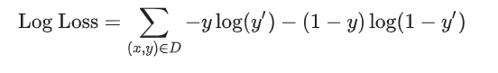

2. Visualize both statistics and schema, and manually fix anomalies in the dataset’s schema and values.
2. Visualize statistics for both datasets simultaneously to fix the datasets’ values, and fix the training dataset’s schema after displaying it together with anomalies in the evaluation dataset.
2. Use TFRecordWriter to convert the training dataset into a TFRecord.
3. Visualize both statistics and schema, and manually fix anomalies in the dataset’s schema and values.
2. Use TFRecordWriter to convert the training and evaluation datasets into TFRecords.
3. Visualize statistics for both datasets simultaneously to fix the datasets’ values, and fix the training dataset’s schema after displaying it together with anomalies in the evaluation dataset.
“The replica 0 ran out of memory with a non-zero status of 9.”
You want to fix this error without vertically increasing the memory of the replicas. What should you do?
2. Use Memorystore to perform feature lookup. Deploy the model as a custom prediction endpoint in Vertex AI, and enable automatic scaling.
2. Use a custom container on Google Kubernetes Engine to deploy a service that performs feature lookup from Memorystore and performs inference with an in-memory model.
2. Use the online service API from Vertex AI Feature Store to perform feature lookup. Deploy the model as a custom prediction endpoint in Vertex AI, and enable automatic scaling.
2. Use a custom container on Google Kubernetes Engine to deploy a service that performs feature lookup from Vertex AI Feature Store’s online serving API and performs inference with an in-memory model.
“Could not find matching concrete function to call loaded from the SavedModel. Got: Tensor("inputs:0", shape=(None,), dtype=string). Expected: TensorSpec(shape=(None, None), dtype=tf.int64, name='inputs')”.
You want to update the model’s code and fix the error while following Google-recommended best practices. What should you do?
2. Configure a scheduled recurring execution for the notebook.
3. Access data and model metadata in Vertex ML Metadata.
2. Configure a scheduled recurring execution for the notebook.
3. Access data and model metadata in Vertex ML Metadata.
2. Write a function that saves data and model metadata by using TensorFlow ML Metadata in one time-stamped subfolder per pipeline run.
3. Configure a scheduled recurring execution for the notebook.
4. Access data and model metadata in Cloud Storage.
2. Load the TFX pipeline in Vertex AI Pipelines, and configure the pipeline to use the same instance type configuration as the notebook.
3. Use Cloud Scheduler to configure a recurring execution for the pipeline.
4. Access data and model metadata in Vertex AI Pipelines.
Model training: BQML allows you to create and run machine learning models using standard SQL queries in BigQuery.
The 'auto_class_weights=TRUE' option balances class labels in the training data. By default, the training data is not weighted. If the training data labels are out of balance, the model can train to predict by weighting the most popular label classes more.
It is correct because it uses a moving average of the sensor data and balances the weights using the parameters of BQML, AUTO_CLASS_WEIGHTS.
Feature Engineering is often one of the most valuable tasks a data scientist can do to improve model performance, for three main reasons:
1. You can isolate and highlight key information, which helps your algorithms "focus" on what’s important.
2. You can bring in your own domain expertise.
3. Once you understand the "vocabulary" of feature engineering, you can bring in other people’s domain expertise.
A ParDo acts on all items at once (like a Map in MapReduce).
The Filter method can be carried out in parallel and autoscaled by the execution framework:


We can create many different kinds of feature crosses.
For example:
• [A X B]: a feature cross formed by multiplying the values of two features.
• [A x B x C x D x E]: a feature cross formed by multiplying the values of five features.
• [A x A]: a feature cross formed by squaring a single feature.
In TensorFlow Playground, the data points (represented by small circles) are initially colored orange or blue, which correspond to zero and negative one.
In TensorFlow Playground, orange and blue are used throughout the visualization in slightly different ways, but in general orange shows negative values while blue shows positive values.
In TensorFlow Playground, in the output layer, the dots are colored orange or blue depending on their original values. The background color shows what the network is predicting for a particular area. The intensity of the color shows how confident that prediction is.
One of the goals of tf.Transform is to provide a TensorFlow graph for preprocessing that can be incorporated into the serving graph (and, optionally, the training graph).
roomsPerPerson and housing price?
- The number of true positives will decrease or stay the same.
- The number of false negatives will increase or stay the same.
This is the best possible ROC curve, as it ranks all positives above all negatives. It has an AUC of 1.0.
In practice, if you have a "perfect" classifier with an AUC of 1.0, you should be suspicious, as it likely indicates a bug in your model. For example, you may have overfit to your training data, or the label data may be replicated in one of your features.
A sarcasm-detection model was trained on 80,000 text messages: 40,000 messages sent by adults (18 years and older) and 40,000 messages sent by minors (less than 18 years old). The model was then evaluated on a test set of 20,000 messages: 10,000 from adults and 10,000 from minors. The following confusion matrices show the results for each group (a positive prediction signifies a classification of "sarcastic"; a negative prediction signifies a classification of "not sarcastic"):
Adults
| True Positives (TPs): 512 | False Positives (FPs): 51 |
| False Negatives (FNs): 36 | True Negatives (TNs): 9401 |
| $$\text{Precision} = \frac{TP}{TP+FP} = 0.909$$ | |
| $$\text{Recall} = \frac{TP}{TP+FN} = 0.934$$ | |
Minors
| True Positives (TPs): 2147 | False Positives (FPs): 96 |
| False Negatives (FNs): 2177 | True Negatives (TNs): 5580 |
| $$\text{Precision} = \frac{TP}{TP+FP} = 0.957$$ | |
| $$\text{Recall} = \frac{TP}{TP+FN} = 0.497$$ | |
While the model achieves a slightly higher precision rate for minors than adults, the recall rate is substantially lower for minors, resulting in less reliable predictions for this group.
A sarcasm-detection model was trained on 80,000 text messages: 40,000 messages sent by adults (18 years and older) and 40,000 messages sent by minors (less than 18 years old). The model was then evaluated on a test set of 20,000 messages: 10,000 from adults and 10,000 from minors. The following confusion matrices show the results for each group (a positive prediction signifies a classification of "sarcastic"; a negative prediction signifies a classification of "not sarcastic"):
Adults
| True Positives (TPs): 512 | False Positives (FPs): 51 |
| False Negatives (FNs): 36 | True Negatives (TNs): 9401 |
| $$\text{Precision} = \frac{TP}{TP+FP} = 0.909$$ | |
| $$\text{Recall} = \frac{TP}{TP+FN} = 0.934$$ | |
Minors
| True Positives (TPs): 2147 | False Positives (FPs): 96 |
| False Negatives (FNs): 2177 | True Negatives (TNs): 5580 |
| $$\text{Precision} = \frac{TP}{TP+FP} = 0.957$$ | |
| $$\text{Recall} = \frac{TP}{TP+FN} = 0.497$$ | |
The model performs well on text messages from adults (with precision and recall rates both above 90%), so restricting its use to this group will sidestep the systematic errors in classifying minors' text messages.
The precision rate for text messages sent by minors is high, which means that when the model predicts "sarcastic" for this group, it is nearly always correct.
The problem is that recall is very low for minors; The model fails to identify sarcasm in approximately 50% of examples. Given that the model's negative predictions for minors are no better than random guesses, we can avoid these errors by not providing a prediction in these cases.
The systematic errors in this model are specific to text messages sent by minors. Restricting the model's use to the group more susceptible to error would not help.
Always predicting "sarcastic" for minors' text messages would increase the recall rate from 0.497 to 1.0, as the model would no longer fail to identify any messages as sarcastic. However, this increase in recall would come at the expense of precision. All the true negatives would be changed to false positives:
| True Positives (TPs): 4324 | False Positives (FPs): 5676 |
| False Negatives (FNs): 0 | True Negatives (TNs): 0 |
which would decrease the precision rate from 0.957 to 0.432. So, adding this calibration would change the type of error but would not mitigate the magnitude of the error.
What do you think might be the problem, and how could you proceed to fix it?
Which technique or algorithm do you think is best to use?
For example, it is necessary to decide on the placement of nodes so that the result is the most economical and inclusive. An algorithm without data tagging must be used.
Which of the following choices do you think is the most suitable?
The main RL algorithms are deep Q-network (DQN) and deep deterministic policy gradient (DDPG).
What kind of ML model do you think is best to use?
For example, if we have the same signature in the center or at the bottom right of an image, the object will be different. But the signature is the same. A neural network that compares these derived features and can simplify the model achieves the best results.
Which of the following technical specifications can't you use with CNN?
It has proved to be an important technique and is also used to introduce non-linearity to the model. We don't need it in our case.
Which of the following types of models and techniques should you focus on to obtain results quickly and with minimum effort?
- Various banking applications will send transactions to the new system in real-time and in standard/normalized format.
- The data will be stored in real-time with some statistical aggregations.
- An ML model will be periodically trained for outlier detection.
- The ML model will issue the probability of fraud for each transaction.
- It is preferable to have no labeling and as little software development as possible.
Which products would you choose?
- Various banking applications will send transactions to the new system in real-time and in standard/normalized format.
- The data will be stored in real-time with some statistical aggregations.
- An ML model will be periodically trained for outlier detection.
- The ML model will issue the probability of fraud for each transaction.
- It is preferable to have no labeling and as little software development as possible.
Which kinds of ML model could be used?
In ML, it is an unsupervised classification method and is widely used to detect unusual or outlier movements. For these reasons, it is one of the main methods for fraud detection.
But it is not the only method because not all frauds are linked to strange movements. There may be other factors.
It is an open-source project and this is the description from its Github page:
XGBoost is an optimized distributed gradient boosting library designed to be highly efficient, flexible and portable. It implements machine learning algorithms under the Gradient Boosting framework. XGBoost provides a parallel tree boosting (also known as GBDT, GBM) that solves many data science problems in a fast and accurate way. The same code runs on major distributed environments (Kubernetes, Hadoop, SGE, MPI, Dask) and can solve problems beyond billions of examples.
Which solutions can you adopt?
Their main features:
- Using packaged templates in Docker images in a K8s environment
- Manage your various tests/experiments
- Simplifying the orchestration of ML pipelines
- Reuse components and pipelines
- Train an ML model both without code (AutoML) and with custom
- Evaluate and tune a model
- Deploy models
- Manage prediction: Batch, Online and monitoring
- Manage model versions: workflows and retraining
- Manage the complete model maintenance cycle
So, there are 2 different platforms, even if there is Scikit Flow that integrates the two.
Scikit-learn doesn't manage ML Pipelines.
You have recently expanded the range of your services and want to refine / update your model. You also want to activate procedures that automate these processes.
Which choices among the following do you prefer in the Cloud GCP?
Therefore, you need to continuously monitor the processes and retrain the model also on newer data, if you find that the frequency distributions of the data vary from the original configuration. It may also be necessary or desirable to create a new model.
Generally, a periodic schedule is adopted every month or week.
For this very reason, all the other answers are not exact.
For this purpose, all written and voice communications with customers are recorded so that they can be classified and managed.
The problem is that Clients often provide private information that cannot be distributed and disclosed.
Which of the following techniques can you use?
The company adopted Analytics-360. So, it can achieve a lot of data on the activities of its customers and on the interest of the various commercial initiatives of the websites, such as (from Google Analytics-360):
- Average bounce rate per dimension
- Average number of product page views by purchaser type
- Average number of transactions per purchaser
- Average amount of money spent per session
- Sequence of hits (pathing analysis)
- Multiple custom dimensions at hit or session level
- Average number of user interactions before purchase
Subsequently, further models will be created to incentivize the most interesting customers better and boost sales.
You have a lot of work to do and you want to start quickly.
What techniques do you use in this first phase?
We are in the field of unsupervised learning. BigQuery is already set up both for data acquisition and for training, validation and use of this kind of model.
The accuracy of the model is very high. But when it is deployed in production, the medical staff is very dissatisfied.
What is the most likely motivation?
It was decided to acquire structured information on projects, areas of expertise and customers through the analysis of these documents.
You're looking for ML methodologies that make this process quicker and easier.
What is the better choice in GCP?
All other answers are incorrect because their functions are already built into Document AI.
All its development processes follow CI / CD specifications and use Docker containers. The requirement is to classify users in various ways and update models frequently, based on new parameters entered into the platform by the users themselves.
So, the problem you are called to solve is how to optimize frequently re-trained operations with an optimized workflow system.
Which solution among these proposals can best solve your needs?
The main functions of Kubeflow Pipelines are:
- Using packaged templates in Docker images in a K8s environment
- Manage your various tests/experiments
- Simplifying the orchestration of ML pipelines
- Reuse components and pipelines
It is within the Kubeflow ecosystem, which is the machine learning toolkit for Kubernetes
Vertex AI Model Monitoring is useful for detecting if the model is no longer suitable for your needs.
Creating ML workflows is possible with Vertex AI Pipelines.
The other answers may be partially correct but do not resolve all items or need to add more coding.
You have built a linear regression model that works well but whose performance you want to optimize.
Which of these techniques could you use?
You are doing Feature Engineering, and your focus is to minimize bias and increase accuracy. Your coordinator has told you that by doing so you risk having problems. He explained to you that, in addition to the bias, you must consider another factor to be optimized. Which one?
The bias-variance dilemma is an attempt to minimize both bias and variance.
The bias error is the non-estimable part of the learning algorithm. The higher it is, the more underfitting there is.
Variance is the sensitivity to differences in the training set. The higher it is, the more overfitting there is.
Periodically, the models are retrained and re-deployed, with a rather complex pipeline on VM clusters:
- New data is streamed from Dataflow
- Data is transformed through aggregations and normalizations (z-scores)
- The model is periodically retrained and evaluated
- New Docker images are created and stored
Which do you choose from the following services?
It's a managed but not a serverless service, especially for custom training.
It obviously has a rich set of features for managing ML pipelines.
They are fully serverless services that can process petabytes of data in public and private datasets and even data stored in files.
BigQuery works with standard SQL and has a CLI interface: bq.
You can use BigQuery jobs to automate and schedule tasks and operations.
With BigQuery ML, you can train models with a rich set of algorithms with data already stored in the Cloud. You may perform feature engineering and hyperparameter tuning and export a BigQuery ML model to a Docker image as required.
At this point, you want to automate the process using the Google Cloud environment.
Which of these solutions allows you to quickly reach your goal?
It, therefore, allows you to manage the entire life cycle seamlessly from modeling, training, and validation, up to production start-up and management of the inference service.
Vertex AI Pipelines can run pipelines built using TFX:
- You can configure a Cluster
- Select basic parameters and click create
- You get your Kubeflow and Kubernetes launched
All the other answers are correct, but not optimal for a quick and managed solution.
Which of these is the best technique?
The new variables are called principal components.
A linear model is assumed as a basis. Therefore, the variables are independent of each other.
During maintenance services for vehicles produced by TerramEarth at the service centers, information relating to their use is downloaded. Every evening, this data flows into the data center, is consolidated and sent to the Cloud.
TerramEarth has an ML model that predicts component failures and optimizes the procurement of spare parts for service centers to offer customers the highest level of service. TerramEarth wants to automate the redevelopment and distribution process every time it receives a new file.
What is the best service to start the process?
So, we may start a Cloud Function that may activate any Cloud Service as soon as the file is received.
Cloud Storage triggers may also activate a Pub/Sub notification, just a little more complex.
It is the simplest and most direct solution of all the answers.
The goal is to carry out the automatic management of the required documents (certificates, origin documents, legal information) so that the practice can be built and verified automatically using the data and documents provided by customers and can be managed in a short time and with the minimum contribution of the scarce specialized personnel.
Which of these GCP services can you use?
It integrates computer natural language processing, OCR, and vision and can create pre-trained templates aimed at intelligent document administration.
Which of the following features are not present in BigQuery ML natively?
BigQuery ML offers all other features except automatic deployment and serving.
BigQuery ML can simply export a model (packaged in a container image) to Cloud Storage.
Which GCP service can be valuable in this regard and in what way?
You decided on Recommendations AI.
What specific recommendation model type is not useful for new products?
It provides the list of products the user has recently viewed, starting with the last.
You are looking for an environment that organizes and manages training, validation and tuning, and updating models with new data, distribution and monitoring in production.
Which of these do you think is the best solution?
Vertex AI integrates many GCP ML services, especially AutoML and custom training, and includes many different tools to help you in every step of the ML workflow.
So, Vertex AI offers two strategies for model training: AutoML and Personalized training.
Machine learning operations (MLOps) is the practice of using DevOps for machine learning (ML).
DevOps strategies automate the release of code changes and control of systems, resulting in greater security and less time to get systems up and running.
All the other solutions are suitable for production. But, given these requirements, Vertex AI, with the AutoML solution's strong inclusion, is the best and the most productive one.
Which of the following techniques should not be used?
You, therefore, have an extremely demanding audience with strong interests that can be of various types.
Users have a small set of articles that they can read for free every month. Then they need to sign up for a paid subscription.
You have been asked to prepare an ML training model that processes user readings and article preferences. You need to predict trends and topics that users will prefer.
But when you train your DNN with Tensorflow, your input data does not fit into RAM memory.
What can you do in the simplest way?
It is designed to create efficient input pipelines and to iterate over the data for their processing.
These iterations happen in streaming. So, they work even if the input matrix is very large and doesn’t fit in memory.
It is developing a series of ML models for different activities: manufacturing, procurement, logistics, marketing, customer service and vehicle tracking.
TerramEarth uses Google Vertex AI and wants to scale training and inference processes in a managed way.
It is necessary to forecast whether a vehicle, based on the data collected during the maintenance service, has risks of failures in the next six months in order to recommend an extraordinary service operation.
Which kind of technology/model should you advise using?
These networks do not have any loops or loops in the network. Information moves in one direction only, forward, from the input nodes, through the hidden nodes (if any) and to the output nodes.
All the other techniques are more complex and suitable for different applications (images, NLP, recommendations).
What are the two best services you can use?
The architectures currently used (they are added at the same time) are:
- Linear
- Feedforward deep neural network
- Gradient Boosted Decision Tree
- AdaNet
- Ensembles of various model architectures
- Normalization
- Encoding and embeddings for categorical features.
- Timestamp columns management (important in our case)
It is developing a series of ML models for different activities: manufacturing, procurement, logistics, marketing, customer service and vehicle tracking. TerramEarth uses Google Cloud Vertex AI and wants to scale training and inference processes in a managed way.
During the maintenance service, snapshots of the various components of the vehicle will be taken. Your new model should be able to determine both the degree of deterioration and any breakages or possible failures.
Which kind of technology/model should you advise using?
Which kind of technology/model should you advise using?
GAN can create new characters from the provided images.
It is also used with photographs and can generate new photos that look authentic.
It is a kind of model highly specialized for this task. So, it is the best solution.
Feedforward neural networks are the classic example of neural networks. In fact, they were the first and most elementary type of artificial neural network.
You aim to provide your audience with pointers to articles that they will indeed find of interest to themselves.
Which of these models can be useful to you?
So, exploiting the choices of other users, the recommendation system makes a guess and can advise people on things not yet been rated by them.
You want to increase the power of your training quickly, but your management wants to keep costs down.
What solutions could you adopt?
TensorBoard is a visual tool for ML experimentation for Tensorflow
Which service do you advise?
It has a visual interface that allows you to create codeless data pipelines as required.
Which of the following methods will not help you with this task?
Furthermore, the model must be able to determine whether the furniture is interesting and require it to be subject to a more detailed estimate. You want Google Cloud to help you reach this ambitious goal faster.
Which of the following services do you think is the most suitable?
Which solution is the best one?
Obviously, this creates a computational load. Therefore, it can be prohibitive in very large datasets, but it is great when you have small datasets.
Which of the following choices do you think is wrong?
You have a big problem: your training jobs last for weeks. You are not going to deliver your project in time.
Which is the best solution that you can adopt?
GCP documentation states that the use of TPUs is advisable with models that:
- use TensorFlow
- need training for weeks or months
- have huge matrix computations
- have deals with big datasets and effective batch sizes

Which techniques or algorithms did he advise to use?
What is the simplest configuration to indicate it?
Which of the following problems is not related to Data Validation?
For example, we may have duplicates when a program loops and creates the same data several times.
A senior Data Scientist asked you:
Which metric for classification models evaluation gives you the percentage of real spam email that was recognized correctly?
What was the exact answer to this question?
Which of the following techniques is not related to embeddings?
It measures how much the change of one with respect to another is related.
Which of the following services do you think is the most suitable?
All the other answers refer to Cloud solutions; so, they are wrong.
Which GCP product would you choose?
So, it is fully compliant with our requirements.
Recently there has been the migration of all the management computing systems to Google Cloud and management has requested that the files should be stored in Cloud Storage and that the tabular data should be stored in BigQuery and pre-processed with Dataflow.
Which of the following techniques is NOT suitable for accessing tabular data as required?
Your outcome model presented a good R-square - coefficient of determination, but the final results were poor.
When you asked for advice, your mentor laughed and said that you failed because of the Anscombe Quartet problem.
What are the other possible problems described by the famous Anscombe Quartet?
You want to increase performances. But you cannot use further resources.
You are afraid that you are not going to deliver your project in time.
Your mentor said to you that normalization could be a solution.
Which of the following choices do you think is not for data normalization?
The requirements are:
- Various banking applications will send transactions to the new system both in real-time and in batch in standard/normalized format
- The data will be stored in a repository
- Structured Data will be trained and retrained
- Labels are drawn from the data.
Which GCP Services could you use?
You have to follow the entire lifecycle: model development, design, and training, testing, deployment, and retraining.
You are looking for UI tools that can help you work and solve all issues faster.
Which solutions can you adopt?
- Profiling
- Monitoring metrics, weights, biases
- Examine model graph
- Working with embeddings
- Pipelines dashboards
- Hyperparameter tuning
- Artifact Store
- Jupyter notebooks
You work on this project. You need to deal with input data that is binary (images) and made by CSV files.
You are looking for the most convenient way to import and manage this type of data.
Which is the best solution that you can adopt?
You need to monitor the performance of your models and let them go faster.
Which is the best solution that you can adopt?
In TensorFlow 2, the default is eager execution. So, one-off operations are faster, but recurring ones may be slower. So, you need to optimize the model.
The purpose of your current project is the automatic and smart acquisition of data from documents and modules of different types.
You work on big datasets with a lot of private information that cannot be distributed and disclosed.
You are asked to replace sensitive data with specific surrogate characters.
Which of the following techniques do you think is best to use?
For example, a 16-digit credit card number becomes another 16-digit number.
You use GCP managed services, specifically Vertex AI.
Suddenly, there is a sensible degradation in the quality of the inferences. You perform various checks, but the model seems to be perfectly fine.
Finally, you control the input data and notice that the frequency distributions have changed for a specific feature.
Which GCP service can be helpful for you to manage features in a more organized way?
Lots of effort is spent in mapping categorical values in the best way: we have to convert strings to numeric values. We have to define a vocabulary of possible values, usually mapped to integer values.
We remember that in an ML model everything must be translated into numbers. Therefore it is easy to run into problems of this type.
Vertex Feature Store is a service to organize and store ML features through a central store.
This allows you to share and optimize ML features important for the specific environment and to reuse them at any time.
All these translate into the greater speed of the creation of ML services. But these also allow minimizing problems such as processing skew, which occurs when the distribution of data in production is different from that of training, often due to errors in the organization of the features.
For example, Training-serving skew may happen when your training data uses a different unit of measure than prediction requests.
So, Training-serving skew happens when you generate your training data differently than you generate the data you use to request predictions. For example, if you use an average value, and for training purposes, you average over 10 days, but you average over the last month when you request prediction.
Which of the following methods could you use to avoid such problems?
To avoid this, it is necessary to monitor the quality of the forecasts continuously.
Vertex Model Monitoring has been designed just for this.
The main goal is to cope with feature skew and drift detection.
For skew detection, it looks at and compares the feature's values distribution in the training data.
For drift detection, it looks at and compares the feature's values distribution in the production data.
It uses two main methods:
- Jensen-Shannon divergence for numerical features.
- L-infinity distance for categorical features. More details can be found here
You are using Compute Engine and GKE. You decided to use a library that lets you have more control over all processes, from development up to production.
Which tool is the best one for your needs?
- Metadata management
- Model validation
- Deployment
- Production execution.
- The libraries can also be used individually.
Vertex AI's main functions are:
- Train custom and AutoML models
- Evaluate and tune models
- Deploy models
- Manage prediction: Batch, Online and monitoring
- Manage model versions: workflows and retraining
Kubeflow Pipelines is an open-source platform designed specifically for creating and deploying ML workflows based on Docker containers.
Their main features:
- Using packaged templates in Docker images in a K8s environment
- Manage your various tests / experiments
- Simplifying the orchestration of ML pipelines
- Reuse components and pipelines
You also use BigTable and CloudSQL, and of course Cloud Storage. In many cases, the same data is used for multiple models and projects. And your data is continuously updated, sometimes in streaming mode.
Which is the best way to organize the input data?
- Datasets: data, metadata and annotations, structured or unstructured. For all kinds of libraries.
- Training pipelines to build an ML model
- ML models, imported or created in the environment
- Endpoints for inference

What command will you use for this operation?
When you have to save a model for resuming training, you have to record both models and updated buffers and parameters in a checkpoint.
A checkpoint is an intermediate dump of a model’s entire internal state (its weights, current learning rate, etc.) so that the framework can resume the training from that very point.
In other words, you train for a few iterations, then evaluate the model, checkpoint it, then fit some more. When you are done, save the model and deploy it as normal.
To save checkpoints, you must use torch.save() to serialize the dictionary of all your state data,
In order to reload, the command is torch.load().
What are you going to do?
Which of the following states is not correct?
You now have to work in the GCP Managed Platform for ML. You need to deploy a custom model with Vertex AI so that it will be available for online predictions.
Which is the correct procedure?
You create an "endpoint object" for your model and then you can deploy the various versions of your model.
Its main elements are given below:
Custom or Pre-built containers
Model
Vertex AI Prediction uses an architectural paradigm that is based on immutable instances of models and model versions.
Regional endpoint
Which technique or algorithm do you think is best to use?
The tf.data API provides these functions:
Prefetching
tf.data.Dataset.prefetch: while the execution of a training pass, the data for the next pass is read.
Parallelizing data transformation
The tf.data API offers the map function for the tf.data.Dataset.map transformation.
This transformation can be parallelized across multiple cores with the num_parallel_calls option.
Sequential and parallel interleave
tf.data.Dataset.interleave offers the possibility of interleaving and allowing multiple datasets to execute in parallel (num_parallel_calls).
Caching
tf.data.Dataset.cache allows you to cache a dataset increasing performance.
You face 2 different sets of problems:
- Transform data to hide personal information you don't need
- Protect your work environment because certain combinations of personal data are useful for your model and you need to keep them
You are struggling with your model (learning rates, hidden layers and nodes selection) for optimizing processing and letting it converge in the fastest way.
What is your problem in ML language?
- Training data is also called examples or records. It is the main input for model configuration and, in supervised learning, presents labels, that are the correct answers based on past experience. Input data is used to build the model but will not be part of the model.
- Parameters are instead the variables to be found to solve the riddle. They are part of the final model and they make the difference among similar models of the same type.
- Hyperparameters are configuration variables that influence the training process itself: Learning rate, hidden layers number, number of epochs, regularization, batch size are all examples of hyperparameters.
The time required to train and test a model can depend upon the choice of its hyperparameters.
With Vertex AI you just need to prepare a simple YAML configuration without coding.
The big problem is that you don’t have the labels for all the data, but you have very little time to complete the task for only a subset of it.
Which of the following services could help you?
If you cannot have your data correctly labeled, you may request professional people to complete your training data.
GCP has a service for this: Vertex AI data labeling. Human labelers will prepare correct labels following your directions.
You have to set up a data labeling job with:
- The dataset
- A list, vocabulary of the possible labels
- An instructions document for the professional people
Your Manager realized that different teams in different projects used to deal with the same features based on the same data differently. The problem arose when models drifted unexpectedly over time.
You have to advise your Manager on the best strategy. Which of the following do you choose?
Which of the following methods are nonparametric?
You begin with data that is already classified. A new example will be set by looking at the k nearest classified points. Number k is the most important hyperparameter.
Which of the following are ensemble-type algorithms?
AdaBoost is built with multiple decision trees, too, with the following differences:
- It creates stumps, that is, trees with only one node and two leaves.
- Stumps with less error win.
- Ordering is built in such a way as to reduce errors.
- Leaf nodes pruning, that is regularization in order to keep the best ones for generalization
- Newton Boosting instead of gradient descent, so math-based and faster
- Correlation between trees reduction with an additional randomization parameter
- Optimized algorithm for tree penalization
- Trees instead stumps
- It uses a loss function to minimize errors.
- Trees are selected to predict the difference from actual values
You would like engineer-to-engineer assistance from both Google Cloud and Google’s TensorFlow teams.
Which of the following services can be used to achieve the above requirement?
It is free but only for big enterprises with a lot of services in GCP. it is prepackaged and optimized for usage with containers and VMs.
It works in Google Cloud, from VM images to managed services like GKE and Vertex AI.
The TensorFlow Enterprise library is integrated in the following products:
- Deep Learning VM Images
- Deep Learning Containers
- Notebooks
- Vertex AI Training
It has a premium level of support from Google.
Which one of the following options do you follow?
So the integration will be immediate without any further costs or data transformations.
Apache Parquet is an open-source column-oriented data storage format born in the Apache Hadoop environment but supported in many tools and used for data analysis.
The problem is that you don’t know the meaning of lazy learning; so you looked for it.
Which of the following methods uses lazy learning?
You begin with data that is already classified. A new example will be set by looking at the k nearest classified points. Number k is the most important hyperparameter.
So you are using two types of tools. But you have been told that it is possible to have more levels of integration between traditional statistical methodologies and those more related to AI / ML processes.
Which tool is the best one for your needs?
TensorFlow Probability main features are:
- Probability distributions and differentiable and injective (one to one) functions.
- Tools for deep probabilistic models building.
- Inference and Simulation methods support: Markov chain, Monte Carlo.
- Optimizers such as Nelder-Mead, BFGS, and SGLD.
Now you have the problem that you have to create a model for recognizing photographic images related to collaborators and consultants. You have to do it quickly, and it has to be an R-CNN model. You don't want to start from scratch. So you are looking for something that can help you and that can be optimal for the GCP platform.
Which of these tools do you think can help you?
It is available for reusing advanced trained models with minimal code.
The ML models are optimized for GCP.
Every day a small batch of data will be sent that will be collected and processed in order to provide customers with the management of their vehicle health and push notifications in case of important messages.
Which GCP products are the most suitable for this project?
DataFlow manages data pipelines directed acyclic graphs (DAG) of transformations (PTransforms) on data (PCollections).
The same pipeline can activate multiple PTransforms.
All the processing can be performed both in batch and in streaming mode.
So, in our case of streaming data, Dataflow can:
- Serialize input data
- Preprocess and transform data
- Call the inference function
- Get the results and postprocess them
The idea is to use BigQuery ML. Therefore you are considering whether it can cover all the functionality you need. Various projects start with the design and set up various models using various techniques and algorithms in your company.
Which of these techniques/algorithms is not supported by BigQuery ML?
It is not supported because it is specialized for images.
You need to appropriately collect and transform data and then create and tune your ML models.
In a second moment, these procedures will be inserted in an MLOps flow and therefore will have to be automated and be as simple as possible.
What are the methodologies / services recommended by Google?
Main techniques are aimed to feature engineering (crossed_column, embedding_column, bucketized_column) and data transformation (tf.Transform library).
What are the parameters that you must indicate?
Everything that happens in these areas is filmed. Instead of having a physical surveillance service, the videos must be managed by a model capable of intercepting unauthorized people and vehicles, especially at particular times.
What are the GCP services that allow you to achieve all this with minimal effort?
In particular, AutoML object tracking allows you to identify and locate particular entities of interest to you with your specific tags.
It has a seasonal business and has collected a lot of sales data from its structured ERP and market trend databases.
It wants to predict the demand of its customers both to increase business and improve logistics processes.
What managed and fast-to-use GCP products can be used for these types of models?
Moreover, it can work in an environment outside GCP that is a big advantage, but it is not in our requirements.
Kubeflow is a system for deploying, scaling and managing complex Tensorflow systems on Kubernetes.
Moreover, it can work in an environment outside GCP that is a big advantage, but it is not in our requirements.
TFX is a platform that allows you to create scalable production ML pipelines for TensorFlow projects.
He asked: “How can I get the most from ML services and the least costs?”
What are the best practices recommended by Google in this regard?
You can configure an automatic shutdown routine when your instance is idle, saving money.
Preemptible VMs are far cheaper than normal instances and are OK for long-running (batch) large experiments.
You can set up the GPU metrics reporting script; it is important because GPU is expensive.
You have to prepare a demo for the Manager and Stakeholders. You are certain that they will ask you about the understanding of the classification and regression mechanism. You’d like to show them an interactive demo with some cool interference.
Which of these tools is best for all of this?
It lets you see data points distributions with different shapes and colors and interactively try new inferences.
Moreover, it shows which features affect your model the most, together with many other characteristics.
All without code.
You recently prepared an NLP model that works well and is about to be rolled out in production.
You have to prepare a demo for the Manager and Stakeholders for your new system of text and sentiment interpretation. You are certain that they will ask you for explanations and understanding about how a software may capture human feelings. You’d like to show them an interactive demo with some cool interference.
Which of these tools is best for all of this?
It is similar to the What-If tool, which instead targets classification and regression models with structured data.
It offers visual explanations of the model's predictions and analysis with metrics, tests and validations.
You recently prepared a DNN model for image recognition that works well and is about to be rolled out in production.
Your manager asked you to demonstrate the inner workings of the model.
It is a big problem for you because you know that it is working well but you don’t have the explainability of the model.
Which of these techniques could help you?
Integrated Gradient works highlight the feature importance. It computes the gradient of the model’s prediction output regarding its input features without modification to the original model.
The new features will be all independent of each other.
Which one do you choose?
EXCEPT gives all rows or fields on the left side except the one coming from the right side of the query.
Example:
SELECT
EXCEPT(mylabel) myvalue AS label
The environment is Vertex AI with AutoML, and your data is stored in a CSV file in Cloud Storage.
AutoML can perform transformations on the data to make the most of it.
Which of the following types of transformations are you not allowed, based on your requirements?
All the other kinds of data are also supported for CSV files, as stated in the referred documentation.
You are preparing data for a linear regression model for Demographic research. You need to choose and manage the correct feature.
Your input data is in BigQuery.
You know very well that you have to avoid multicollinearity and optimize categories. So you need to group some features together and create macro categories.
In particular, you have to join country and language in one variable and divide data between 5 income classes.
Which ones of the following options can you use?
Example: ML.FEATURE_CROSS STRUCT(country, language) AS origin)
and ML.QUANTILE_BUCKETIZE → income_class
You have been asked which activation function to use.
Which of the following do you choose?
The management has decided to store most of the data to be used for ML models in BigQuery.
The motivation is that BigQuery allows for preprocessing and transformations easily and with standard SQL. It is highly structured; so it offers efficiency, integration and security.
Your team must create and modify code to directly access BigQuery data for building models in different environments.
What are the tools you can use?
What other types of models can you implement with AutoML?
You are concerned that the final system is not efficient and scalable enough. You are looking for the simplest and most managed GCP solution.
Which of these can be the solution?
The service supports both online prediction and batch prediction.
You have updated an AutoML model and want to deploy it to production. But you want to maintain both the old and the new version at the same time. The new version should only serve a small portion of the traffic.
What can you do?
What types of storage should you avoid in the managed environment of GCP ML, such as Vertex AI?
You want to leverage Explainable AI to understand which are the most essential features and how they influence the model.
For what kind of model may you use Vertex Explainable AI?
You need to increase the performance of the training sessions and you already use caching and prefetching.
So now you want to use GPUs, but in a single machine, for cost reduction and experimentations.
Which of the following is the correct strategy?
tf.distribute.MirroredStrategy lets you use multiple GPUs in a single VM, with a replica for each CPU.
An experienced colleague of yours asked for the logs. You found out that there is no logging information available. What kind of logs do you need and how do you get them?
You want to find a metric that allows you to evaluate your model for how well it separates the two classes. You are interested in finding a method that is scale invariant and classification threshold invariant.
Which of the following is the optimal methodology?
It plots and relates each others two different values:
- TPR: true positives / all actual positives
- FPR: false positives / all actual negatives
It provides divisibility between classes. So it is independent of the chosen threshold value; in other words, it is threshold-invariant.
When it is equal, it is 0.5 indicating that the model randomly foresees the division between two classes, similar to what happens with heads and tails when tossing coins.
What can you do?
Checking and updating models create additional difficulties. You are undecided whether to use Vertex Pipelines and Kubeflow Pipelines. You wonder if starting from Kubeflow, you can later switch to a more automated and managed system like Vertex AI.
Which of these answers are correct?
You migrated to Google Cloud. Your models are developed with PyTorch, TensorFlow, and BigQuery ML. You also use BigTable and CloudSQL, and Cloud Storage, of course. You need to use input tabular data in CSV format. You are working with Vertex AI.
How do you manage them in the best way?
You are now working on an international project with other partners. You need to use the Vertex AI. You are asking experts which the capabilities of this managed suite of services are.
Which elements are integrated into Vertex AI?
So, all the other answers are wrong because they cover only a subset of Vertex functionalities.

Which of the following is the optimal methodology?
The intuitive explanation is that when you want to emphasize the loss of bigger mistakes, you need to find a way to penalize such differences.
In this case, it is often used the square loss. But in the case of probabilistic values (between 0 and 1), the squaring decreases the values; it does not make them bigger.
On the other hand, with a logarithmic transformation, the process is reversed: decimal values get bigger.
In addition, logarithmic transformations do not modify the minimum and maximum characteristics (monotonic functions).
These are some of the reasons why they are widely used in ML.
Pay attention to the difference between loss function and ROC/AUC, which is useful as a measure of how well the model can discriminate between two categories.
You may have two models with the same AUC but different losses.

You are starting to get interested in MLOps and are trying to understand the different processes involved.
You have prepared a checklist, but inside there is a service that has nothing to do with MLOps.
Which one?
MLOps covers all processes related to ML models; experimentation, preparation, testing, deployment and above all continuous integration and delivery.
The MLOps environment is designed to provide (some of) the following:
- Environment for testing and experimentation
- Source control, like Github
- CI/CD Continuous integration/continuous delivery
- Container registry: custom Docker images management
- Feature Stores
- Training services
- Metadata repository
- Artifacts repository
- ML pipelines orchestrators
- Data warehouse/ storage and scalable data processing for batch and streaming data.
- Prediction service both batch and online.
So, all the other answers describe MLOps functionalities.
You want to leverage Vertex Explainable AI to understand the most important features and how they influence the model.
Which three methods does Vertex AI leverage for feature attributions?
You work as a Data Scientist. You train and deploy several ML models.
Your manager just asked you to find a simple method to determine affinities between different products and categories to give sellers and applications a wider range of suitable offerings for customers.
The method should give good results even without a great amount of data.
Which of the following different techniques may help you better?
So, the problem is to find similar products as a first step.
You take two products and their characteristics (all transformed in numbers). So, you have two vectors.
You may compute differences between vectors in the euclidean space. Geometrically, that means that they have different lengths and different angles.
You migrated to Google Cloud. Your models are developed with PyTorch, TensorFlow and BigQuery ML.
You are now working on an international project with other partners.
You need to let them use your Vertex AI dataset in Cloud Storage for a different organization.
What can you do?
You need to properly collect and transform data and then work on your ML models. You want to identify the services for data transformation that are most suitable for your needs. You need automatic procedures triggered before training.
What are the methodologies / services recommended by Google?
In particular, you have various fields that have no value or report NaN. Your expert colleague told you that you need to carry out a procedure that modifies them at the time of acquisition. What kind of functionalities do you need to provide?
The job they gave you is to perform Data cleaning and correction so that they will later be used in the best possible way for creating and updating ML models.
Data is stored in files of different formats.
Which GCP service is best to help you with this business?
It is completely serverless. You don’t need to write code or procedures.
Deep Learning VM images have GPU drivers installed but if you don't use an image with GPU drivers installed, you will need to install them.
L1 and L2 are two examples of regularization techniques.
L1 and L2 are two examples of regularization techniques.
For example, given the initial position and speed of an object, as well as its mass and the forces acting on it, we can precisely predict its position at any time. For this case, the mathematical model works much better than any ML model!
Due to the imbalanced classes, the model training is not working as desired. What’s the best way to resolve this issue?
Zeellow is using ML training to predict housing prices, and they retrain the models every month by integrating new data. The company does not want to write any code in the ML process. What method best suits their needs?
Zeellow wants to use ML to forecast future sales by leveraging their historical sales data. The historical data is stored in cloud storage. You want to rapidly experiment with all the available data. How should you build and train your model?
The team is working on a strategy for model retraining. What is your suggestion?
When data skew is detected, this means that data patterns are changing, and we need to retrain the model to capture these changes.
It also asks you to minimize false alarms (false positives) - maximize precision (Precision = TruePositives / (TruePositives + FalsePositives)).
So, you want to maximize both precision and recall.
Depending on the granularity of the bins, this feature cross could learn city-specific housing effects.
- Training set: [A1, B2, F1, E2, ...]
- Testing set: [A2, C3, D2, F4, ...]
- Validation set: [B1, C1, D9, C2...]
- Training set: [A1, A2, A3, E1, E2, ...]
- Testing set: [B1, B2, C1, C2, C3, ...]
- Validation set: [D1, D2, F1, F2, F3, ...]
- Training set: [A1, B1, C1, ...]
- Testing set: [A2, C2, F2, ...]
- Validation set: [D3, A3, C3, ...]
model = tf.keras.Sequential()
model.add(tf.keras.layers.Dense(128, activation='relu', input_shape=(200,)))
model.add(tf.keras.layers.Dropout(rate=0.25))
model.add(tf.keras.layers.Dense(4, activation='relu'))
model.add(tf.keras.layers.Dropout(rate=0.25))
model.add(tf.keras.layers.Dense(2))
How many trainable weights does this model have?